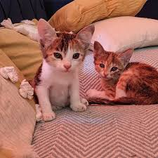
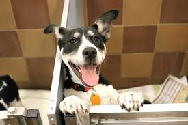

Home
Welcome to Pet Adoption Center, an organization dedicated to helping homeless and abandoned animals find safe and loving homes. Our mission is to connect caring individuals with pets that need compassion, care, and companionship. We work closely with animal shelters and rescue groups to ensure that every pet receives proper medical attention, nutrition, and a comfortable environment while waiting for adoption.
Our team strongly believes that every animal deserves a second chance at life. Through our adoption programs, awareness campaigns, and community support initiatives, we aim to reduce the number of stray and abandoned animals. We carefully guide potential pet owners through the adoption process to ensure that each pet is placed in a responsible and caring home.


At Pet Adoption Center, we are committed to promoting kindness toward animals and encouraging people to choose adoption over purchasing pets. By adopting a pet, you are not only gaining a loyal companion but also giving an animal the opportunity to live a happy and secure life. Together, we can create a world where every pet is loved and cared for.
Responsibilities of a Pet Owner
Owning a pet is a long-term responsibility that requires care, patience, and commitment. Pets depend on their owners for food, shelter, medical care, and emotional support. A responsible pet owner ensures that their pet receives proper nutrition, regular veterinary checkups, vaccinations, and daily exercise. Pets also need attention and affection because they are social animals that form strong bonds with humans. Training and proper behavior guidance are also important to ensure pets adapt well to their home environment. Adopting a pet should never be a temporary decision because animals can live for many years and rely on their owners throughout their lives.
Benefits of Having a Pet
Having a pet can greatly improve a person's physical and emotional well-being. Pets provide companionship and help reduce feelings of loneliness, stress, and anxiety. Many studies show that interacting with animals can lower blood pressure and improve overall mood. Dogs encourage their owners to stay active through regular walks and outdoor activities, while cats and other small pets provide comfort and relaxation at home. Pets also teach responsibility, empathy, and kindness, especially to children. They become part of the family and create strong emotional connections that last for many years.
Tips for First-Time Pet Owners
| |
First-time pet owners should carefully prepare before bringing a pet home. It is important to understand the specific needs of the animal you plan to adopt, including its diet, exercise requirements, and living environment. Preparing a safe and comfortable space for the pet helps them adjust more easily to their new home. New owners should also learn basic training techniques and maintain a regular feeding and care routine. Patience is essential because pets may take time to adapt to a new environment. By being well prepared and attentive, first-time owners can build a strong and loving relationship with their pet.
How Animal Shelters Help Animals
Animal shelters play a vital role in protecting and caring for abandoned and homeless animals. These organizations rescue animals from dangerous situations, provide medical treatment, and ensure they receive proper food and shelter. Shelters also work to rehabilitate animals that may have experienced neglect or abuse, helping them regain trust in humans. Volunteers and staff members dedicate their time and effort to finding suitable homes for these animals through adoption programs and awareness campaigns. Supporting animal shelters through adoption, donations, or volunteering helps ensure that more animals receive the care and love they deserve.